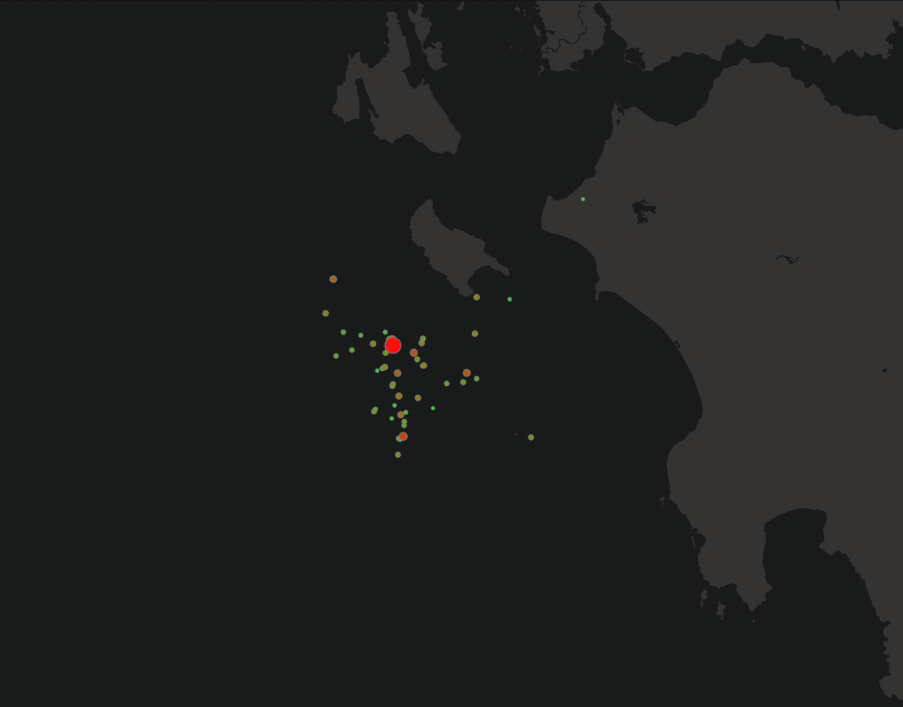
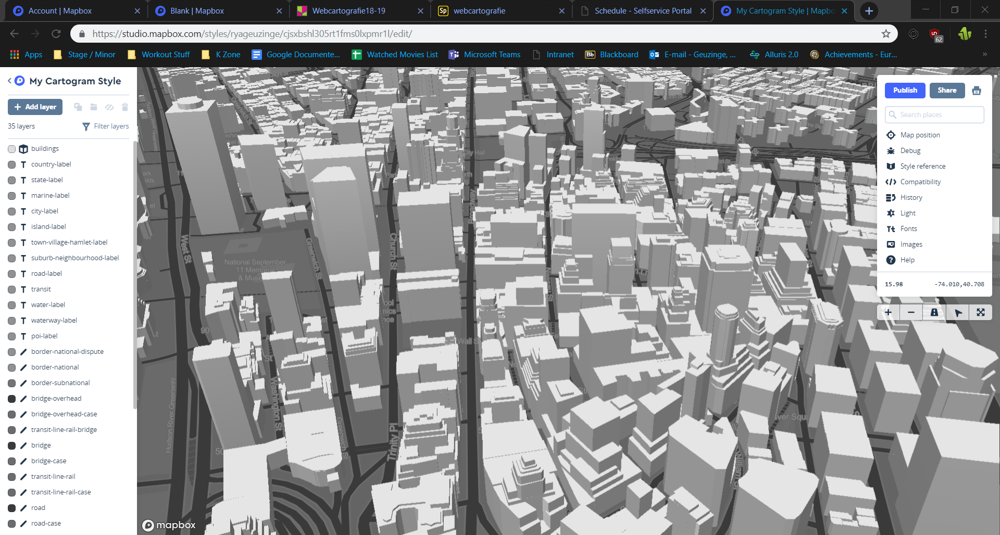
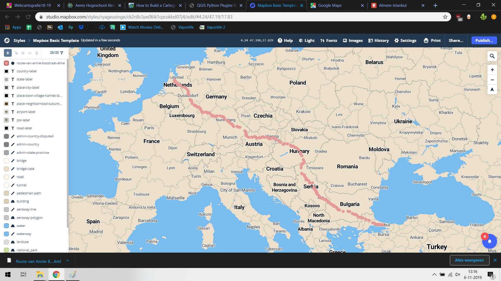
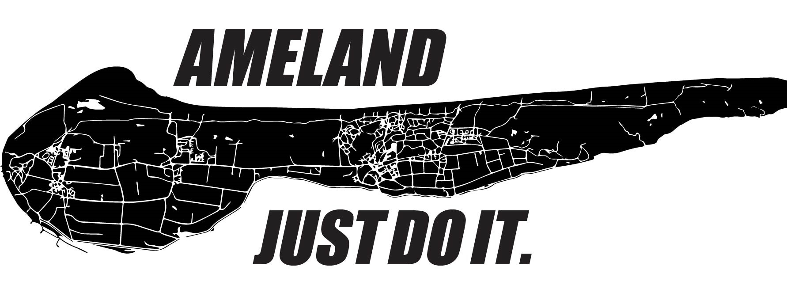
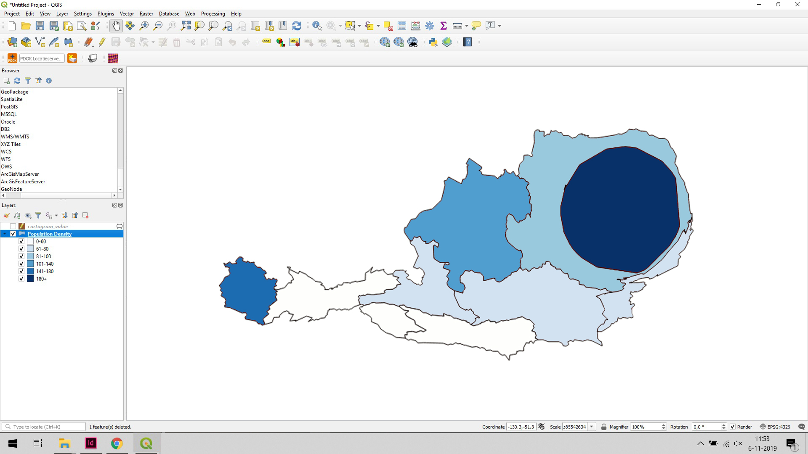
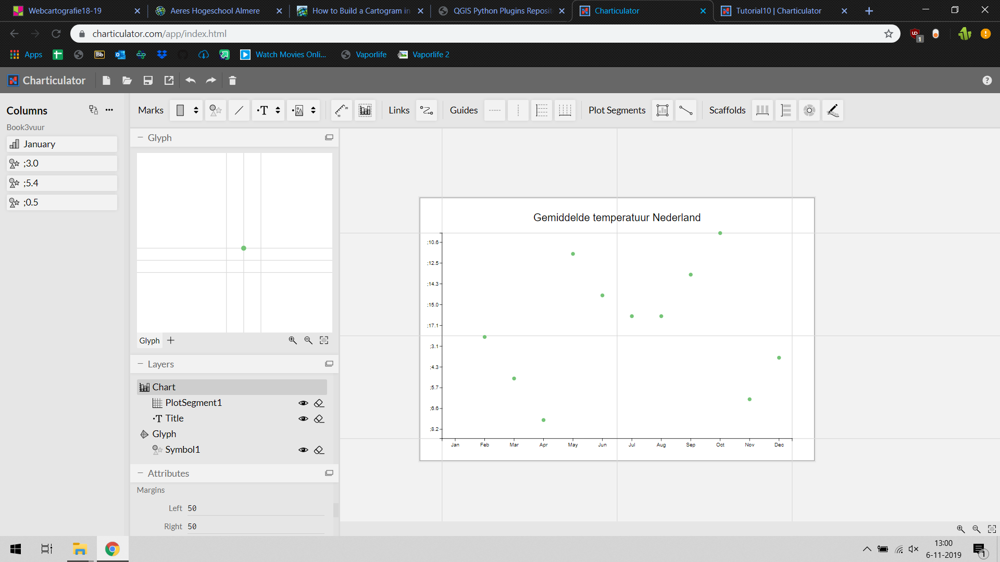
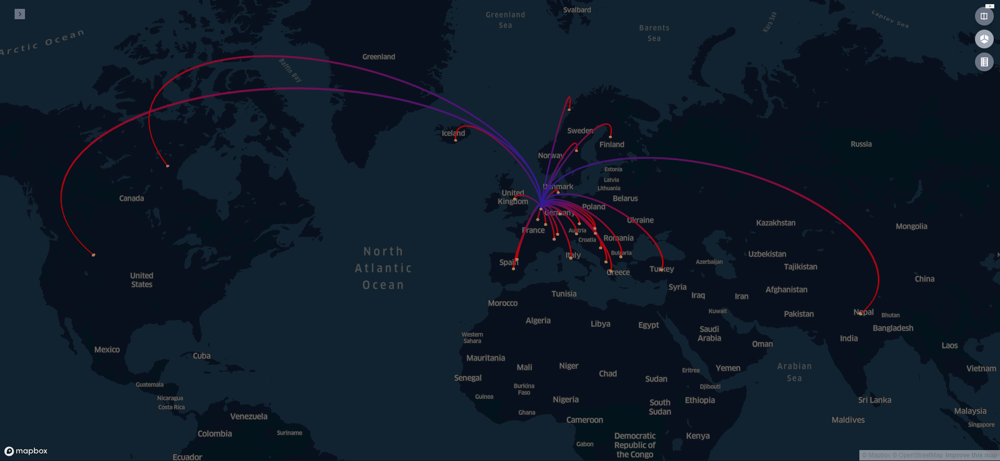

GMD Skillz @work in verschillende opdrachten
Griekenland Mapbox
Dit is een kaart van de verschillende aardbevingen in Griekenland. Deze kaart is gemaakt in Mapbox. Een grotere en rode symbool is een zwaardere aardbeving en een kleine groene is een lichte aardbeving.

3D Opdracht Mapbox
Ook hebben we met mapbox de skyline van Manhattan gevisualiseerd. Dit was een leuke opdracht om te doen. Ik hoop dat ik in mijn verdere carriere dit ook nog een keer zou kunnen gebruiken.

Eigen Opdracht Mapbox
Als laatst hebben we voor mapbox ook een eigenopdracht gemaakt. Dit is een routekaart van Almere vaan Istanbul, deze heb ik een keer gereden voor een vakantie.

TOP10NL Poster
Voor de poster heb ik Ameland gebruikt en veranderd in een Nike poster. Ameland lijkt de vaagjes de vorm te hebben van het logo dus dacht ik dat dit een leuke combinatie zou zijn.

Cartogram opdracht
Omdat het lastig was om zelf een cartogram te maken. Heb ik een tutorial gevolgd met al gegeven datasets om een kaart na te maken. Via een plugin op QGIS is dit gelukt, hij maakt automatisch van polygonen een groter of kleiner vlak afhangende van de waarde die hij is gegeven.

Charticulator
Deze opdracht was bijna onmogelijk. Zelfs met tutorials begreep ik er niks van. X-as waarden zijn in de verkeerde volgorde en de y-as is eigenlijk ook niet duidelijk. Ik zou dit programma niet aanraden.

Kepler Arc Opdracht
Het mooie van Kepler is de arc-kaart visualisatie tool. Met deze tool kan je mooie bogen visualiseren op basis van puntendata. Deze kaart geeft weer alle landen die ik heb bezocht.
